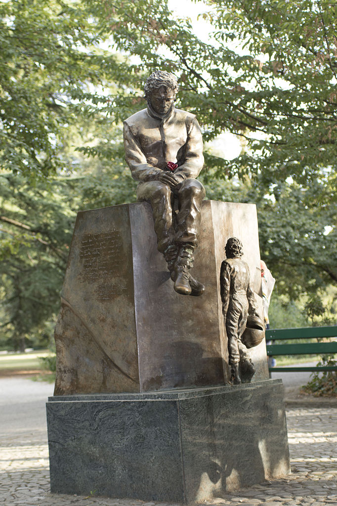

Ayrton Senna
The Story of Senna, Formula 1's Humble Hero and the only Superhero

A statue of Ayrton Senna at the Parco delle Acque Minerali by the Tamburello corner of the Autodromo Enzo e Dino Ferrari in Italy.
Here's a time line of Senna's life:
- Ayrton Senna da Silva (Brazilian Portuguese: 21 March 1960 – 1 May 1994) was a Brazilian racing driver who won the Formula One World Drivers' Championship in 1988, 1990 and 1991, and who is widely regarded as one of the greatest Formula One drivers of all time. He died in an accident while leading the 1994 San Marino Grand Prix.
- Senna began his motorsport career in karting, moved up to open-wheel racing in 1981, and won the 1983 British Formula Three Championship. He made his Formula One debut with Toleman-Hart in 1984, before moving to Lotus-Renault the following year and winning six Grands Prix over the next three seasons. In 1988, he joined Frenchman Alain Prost at McLaren-Honda. Between them, they won all but one of the 16 Grands Prix that year, and Senna claimed his first World Championship. Prost claimed the championship in 1989, and Senna his second and third championships in 1990 and 1991. In 1992, the Williams-Renault combination began to dominate Formula One. Senna nonetheless managed to finish the 1993 season as runner-up, winning five races and negotiating a move to Williams in 1994.
- Senna has often been voted as the best and most influential Formula One driver of all time in various motorsport polls. He was recognised for his qualifying speed over one lap, and from 1989 until 2006 he held the record for most pole positions. He was also acclaimed for his wet weather performances, such as the 1984 Monaco Grand Prix, the 1985 Portuguese Grand Prix, and the 1993 European Grand Prix. He holds a record six victories at the Monaco Grand Prix, and is the fifth-most successful driver of all time in terms of race wins. Senna courted controversy throughout his career, particularly during his turbulent rivalry with Prost. In the Japanese Grands Prix of 1989 and 1990, each of which decided the championship of that year, collisions between Senna and Prost determined the eventual winner.
There was one area at Dallas where just about everyone hit the wall. He hit it there too. When he got back to the pits he said: ‘I just cannot understand how I did that. I was taking it no differently than I had been before. The wall must have moved.’ “We thought: ‘Yeah, right, sure the wall’s moved.’ He was very insistent on this so after the race we went out and had a look. The wall had moved. It was concrete blocks and someone had clipped it, moved it, moved it just a few millimetres – and I mean just a few millimetres – and he had been judging it that perfectly.
-- Pat Symonds (F1 engineer)
If you have time, you should read more about this incredible human being on his Wikipedia entry.
Disclaimer: All content on this page is acquired from Google and Wikipedia. No intention of copyright infringement.